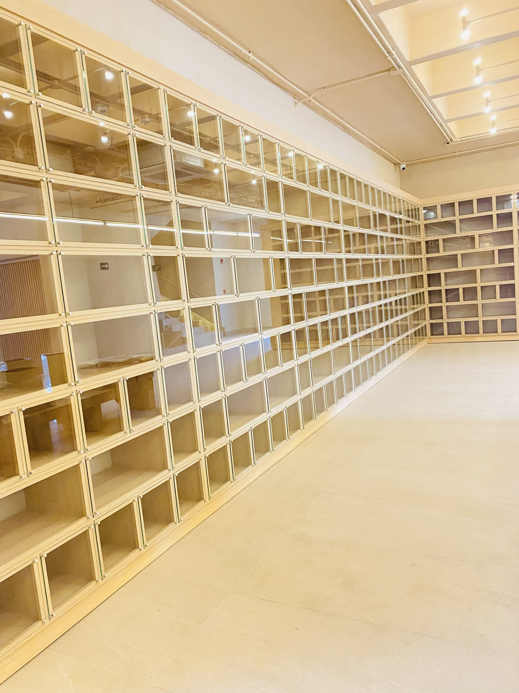
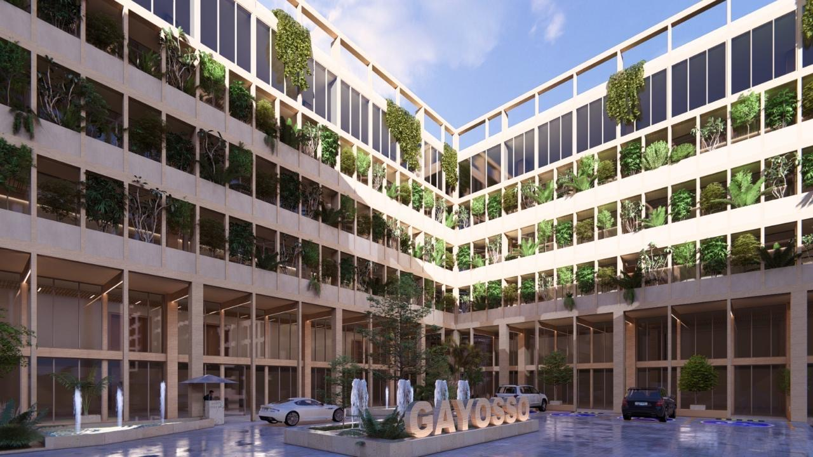

DETALLE DE SU PLAN
16 de noviembre de 2026
2 Servicios ESENCIAL PRO + Nicho de regalo
Esto es lo que recibe su familia · y lo que se cubre por separado
⚱️ Ataúd y urna de su categoría (Esencial Pro)

Ataúd Iter PaxSi elige inhumación: metálico, se sepulta con su ser querido

Ataúd Renasce CrSi elige cremación: ataúd de presentación para la velación

Urna OblatioDe madera, para las cenizas
🕊️ Su nicho en el Mausoleo de Marianas Nogalar

Nichos del mausoleoNicho chico para 2 urnas · piso 5, nivel superior

Marianas NogalarAv. Nogalar Sur 420 A, San Nicolás · apertura diciembre 2026
✅ SÍ incluye
- Sala de velación 24 h (ecuménica)
- Ataúd, o ataúd de presentación + urna si elige cremación
- Embalsamamiento y arreglo estético
- Cafetería básica
- Traslado a la funeraria y al destino final (área metropolitana)
- Asesoría en trámites
- Ambivalente: inhumación o cremación
- Nicho 2 urnas a perpetuidad + 2 ceremonias de depósito de cenizas
✖ NO incluye (se paga aparte)
- Recuperación en hospitales o instituciones
- Certificado médico, trámites ante CODE y registro civil
- Pago y gestión del acta de defunción
- Derechos de inhumación o cremación ante autoridad
- Sacerdote, misa, coro, música, flores y esquela
- Embalsamamiento clínico · traslados foráneos
- Nicho: mantenimiento anual, apertura y cierre, grabado de placa
💡 Lo que no incluye no lo tiene que andar buscando: el día del servicio, el consejero familiar de Gayosso se lo gestiona en la misma agencia y usted solo decide qué contratar.
Abraham Cutipa
Asesor Certificado de Previsión Familiar · Grupo Gayosso · Monterrey
WhatsApp 81 1627 6206
Fotos de catálogo oficial Gayosso Monterrey y renders de Marianas Nogalar; el producto final puede variar. Si se elige cremación, Gayosso informa si el ataúd aplica o hay diferencia de precio. Contenido según tabla oficial Protección Familiar Gayosso.